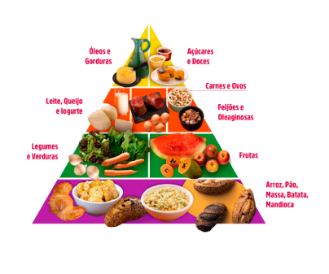
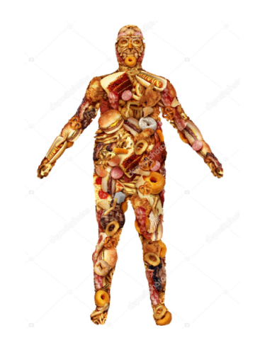

A pirâmide alimentar é um modelo visual que representa a organização dos alimentos em grupos
conforme suas funções e a quantidade ideal a ser consumida para garantir uma alimentação equilibrada e saudável.
Na base da pirâmide estão os cereais, pães, tubérculos e raízes, que são fontes importantes de carboidratos, a
principal fonte de energia do corpo. Alimentos como arroz integral, pão integral, massas integrais e tubérculos
fornecem não só energia, mas também fibras, que ajudam no funcionamento do intestino e proporcionam saciedade
prolongada. Recomenda-se o consumo de 5 a 9 porções diárias desses alimentos, priorizando as versões integrais
para maiores benefícios nutricionais.
No segundo nível encontram-se as hortaliças e frutas, que são essenciais por serem ricas em vitaminas, minerais
e fibras. Esses alimentos são fundamentais para o fortalecimento do sistema imunológico, a proteção contra
doenças e a manutenção do funcionamento adequado do organismo. A ingestão diária recomendada é de pelo menos 3
porções de frutas e 3 porções de hortaliças, preferindo-se opções variadas e coloridas para garantir uma ampla
gama de nutrientes. Além disso, esses alimentos têm baixo teor calórico e contribuem para o controle do peso
corporal.
Logo acima, no terceiro nível, estão as proteínas, que se dividem em grupos como carnes, ovos, leguminosas
(feijões, lentilhas, grão-de-bico) e laticínios. Esses alimentos são fundamentais para a construção, manutenção
e reparo dos tecidos do corpo, além de desempenharem papel importante na síntese de enzimas e hormônios. O
consumo sugerido é de 3 porções diárias de leite e derivados preferencialmente com baixo teor de gordura, e de 1
porção diária de leguminosas. As proteínas ajudam também na prevenção de diversas doenças, contribuem para a
saúde óssea e fornecem ferro e vitaminas do complexo B, essenciais para a produção de energia e para a
circulação sanguínea.
No topo da pirâmide, em menor proporção, estão os óleos, gorduras, açúcares e doces, que devem ser consumidos
com moderação para evitar efeitos negativos à saúde. Embora as gorduras sejam importantes para o funcionamento
cerebral e a absorção de vitaminas lipossolúveis, o excesso de gorduras saturadas, trans e o consumo elevado de
açúcares estão associados a problemas como obesidade, diabetes e doenças cardiovasculares. É recomendado
priorizar o uso de gorduras saudáveis, como azeite extra virgem e oleaginosas, enquanto o consumo de açúcar e
doces deve ser esporádico.
A pirâmide alimentar funciona como um guia prático para ajudar as pessoas a planejar refeições que promovam a
saúde e previnam doenças. Seguir as proporções indicadas pelo modelo estimula o consumo de alimentos variados
que supram as necessidades nutricionais sem excessos prejudiciais. Dessa forma, uma dieta baseada na pirâmide
proporciona equilíbrio nutricional, melhora a qualidade de vida e contribui para a manutenção do peso corporal e
a prevenção de enfermidades crônicas, tornando-se um instrumento essencial para a promoção da saúde pública.

Uma boa alimentação deve ser composta principalmente por alimentos naturais e minimamente
processados, pois garantem que o corpo receba todos os nutrientes essenciais de forma equilibrada e sem excessos
de aditivos químicos. Frutas, verduras, legumes, cereais integrais e proteínas magras são os pilares de uma
dieta saudável, proporcionando vitaminas, minerais, fibras e proteínas fundamentais para o funcionamento do
organismo. Esses alimentos ajudam a fortalecer o sistema imunológico, reduzindo a incidência de doenças e
promovendo a saúde geral.
É importante também praticar a moderação no consumo de cada grupo alimentar, evitando excessos de açúcares,
gorduras saturadas e sal, que estão associados ao desenvolvimento de doenças crônicas como diabetes, hipertensão
e problemas cardiovasculares. Uma alimentação equilibrada deve conter quantidades proporcionais dos diferentes
nutrientes, visando sempre promover o equilíbrio energético e a manutenção do peso corporal adequado. Alimentos
industrializados e ultraprocessados devem ser consumidos com cautela para evitar impactos negativos na saúde.
Além da escolha dos alimentos, hábitos alimentares regulares são essenciais para um bom funcionamento do
metabolismo. Fazer refeições em horários regulares e evitar longos períodos de jejum ajuda a manter os níveis de
energia estáveis e previne o consumo exagerado nas refeições seguintes. Beber bastante água é igualmente
fundamental, pois a hidratação adequada auxilia em processos metabólicos, regulação da temperatura corporal e
funcionamento dos órgãos.
A priorização de gorduras boas, como azeite de oliva, abacate, sementes e oleaginosas, promove a saúde
cardiovascular e auxilia na absorção de vitaminas lipossolúveis. Essas gorduras também têm efeito
anti-inflamatório e contribuem para a melhora das funções cerebrais. Já as proteínas magras, presentes em
peixes, aves, ovos, leguminosas e laticínios com baixo teor de gordura, são essenciais para a construção e
reparo dos tecidos, ajudando na manutenção da massa muscular e na produção de enzimas e hormonas.
Por fim, uma boa alimentação impacta diretamente na disposição física, no humor e na qualidade do sono,
refletindo em uma melhor qualidade de vida. Ao garantir todos os nutrientes essenciais, o corpo funciona de
forma mais eficiente, aumentando a resistência a doenças e melhorando o bem-estar geral. Assim, a adoção de uma
alimentação saudável e equilibrada, aliada a bons hábitos, é uma das melhores formas de promover saúde,
longevidade e qualidade de vida.

A má alimentação é caracterizada pelo consumo excessivo de alimentos ultraprocessados, ricos em
gorduras ruins, açúcares, sal e calorias vazias, enquanto há uma ingestão insuficiente de frutas, verduras,
legumes e alimentos naturais. Essa combinação resulta em uma dieta desequilibrada que causa vários prejuízos à
saúde, afetando tanto o funcionamento do corpo quanto o bem-estar geral. O excesso desses ingredientes nocivos
gera um ambiente propício para o desenvolvimento de doenças crônicas e agrava problemas de saúde já existentes.
As consequências da má alimentação são diversas e preocupantes, incluindo obesidade, diabetes tipo 2,
hipertensão e doenças cardiovasculares, que são as principais causas de morte no mundo atualmente. Além disso, o
consumo inadequado pode levar a cânceres, principalmente aqueles relacionados ao excesso de gordura corporal e à
inflamação crônica. Problemas digestivos como constipação e diarreia também são comuns, assim como fadiga, baixa
imunidade e distúrbios metabólicos que comprometem a qualidade de vida das pessoas.
O consumo excessivo de sódio, conservantes e açúcares vai além dos problemas metabólicos; pode causar distúrbios
neurológicos e inflamações sistêmicas que afetam até a função cerebral. Essas substâncias, quando em excesso,
geram desequilíbrios que podem culminar em doenças sérias, incluindo demência e outras condições neurais. A
repetição de frituras e alimentos ultraprocessados cria um ciclo prejudicial, intensificando o risco para
múltiplas enfermidades e reduzindo a longevidade.
Para prevenir esses problemas, é fundamental evitar frituras repetidas, controlar rigorosamente o consumo de
açúcares e optar pelo consumo de alimentos frescos e naturais. Substituir produtos industrializados por
preparações caseiras com ingredientes integrais e nutritivos é uma estratégia eficaz para melhorar a saúde e
prevenir doenças. A prática de hábitos alimentares saudáveis deve ser incentivada para reduzir a incidência de
enfermidades relacionadas à má alimentação.
Em resumo, a má alimentação compromete gravemente a saúde geral, aumentando o risco de diversas doenças crônicas
e afetando a qualidade de vida das pessoas. Reconhecer os impactos negativos e fazer escolhas alimentares
conscientes é essencial para promover o bem-estar e evitar complicações graves. A adoção de uma dieta
equilibrada e rica em alimentos naturais é a base para viver com mais saúde e prevenir as consequências da má
alimentação

Topo
 Inicio
Alimentação
Receitas
Estilo de vida
Inicio
Alimentação
Receitas
Estilo de vida